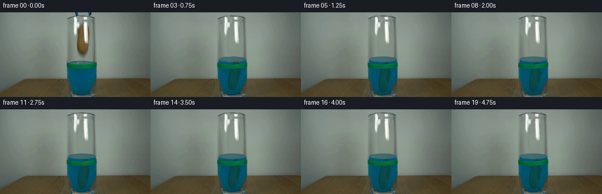
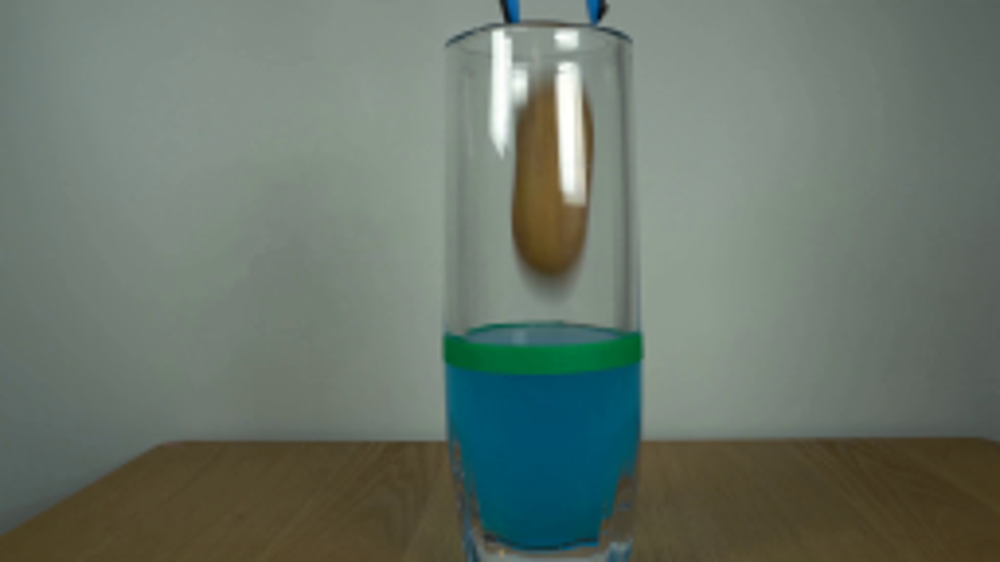
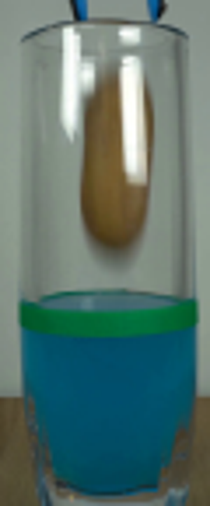
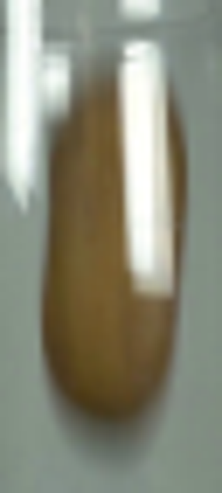
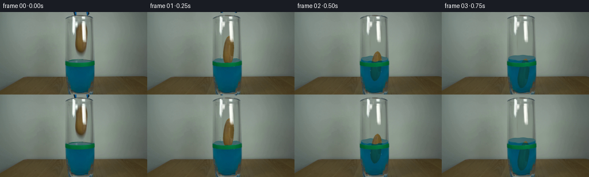
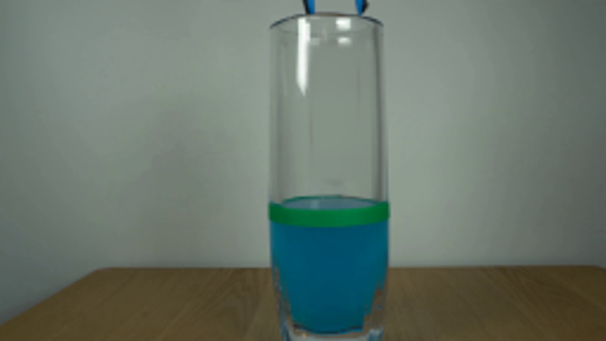
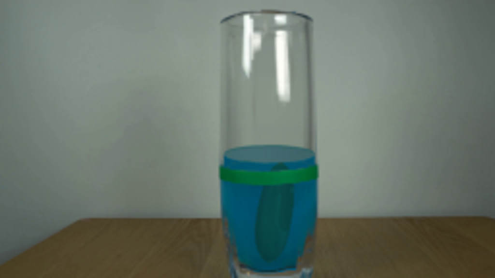

CODING AGENTS AS PIXEL WORLD MODELS
traex/GPT-6.1-Sol · 0143
点击播放 · 原生 RGB 像素
逐轮保存的候选
回放视频、检查图与代码变化。
每份候选均可单独播放。实际图片检查记录在下方工具轨迹中。
候选 01播放与检查图
点击播放 · 原生 RGB 像素

展开代码变化
--- 上一保存版本
+++ 本次保存版本
@@ -0,0 +1,185 @@
+from pathlib import Path
+import numpy as np
+from PIL import Image, ImageDraw
+import cv2
+from scipy.ndimage import gaussian_filter, gaussian_filter1d
+from artifact_io import save
+
+ROOT=Path(__file__).resolve().parent
+S=4
+H,W=144,256
+img=np.array(Image.open(ROOT/'first_frame.png').convert('RGB'))
+orig=img.astype(float)
+yy,xx=np.mgrid[:H,:W]
+
+# The fixed glass is retained photographically. Separate its front highlights
+# from the object so that they do not follow the falling potato.
+ys=np.array([17.5,20,24,30,38,46,54,60,64,68,70])
+ls=np.array([141,138,136,134,132.6,131.8,131.7,132.7,134.2,137,140])
+rs=np.array([143,146,148.3,150,150.6,150.2,149.6,148.4,146.8,144,140])
+yh,xh=np.mgrid[:H*S,:W*S]/S
+left=np.interp(yh,ys,ls);right=np.interp(yh,ys,rs)
+bodyhi=((yh>=ys[0])&(yh<=ys[-1])&(xh>=left)&(xh<=right)).astype(float)
+bodyhi=gaussian_filter(bodyhi,.9)
+body=cv2.resize(bodyhi,(W,H),interpolation=cv2.INTER_AREA)
+
+background=orig.copy()
+# Estimate the unobstructed inner-glass colour from adjacent clear columns.
+col=gaussian_filter1d(np.median(orig[:,153:158],axis=1),2.0,axis=0)
+fill=np.zeros_like(orig)
+for x in range(W):
+ fill[:,x]=col+np.array([3,3,3])*np.exp(-((x-137)/13)**2)
+# Broad soft mask includes the faint shadow under the suspended potato.
+erase=gaussian_filter(((xx>=130)&(xx<=152)&(yy>=18)&(yy<=76)).astype(float),1.3)
+erase=np.maximum(erase,gaussian_filter(body,1.1))
+background=orig*(1-erase[...,None])+fill*erase[...,None]
+# Main right-hand rectangular room/window reflection on the glass wall.
+reflection=np.zeros((H,W))
+reflect_region=(xx>=140)&(xx<=150)&(yy>=16)&(yy<=54)
+est_r=105+9*np.exp(-((xx-140)/6)**2)
+reflection[reflect_region]=np.clip((orig[...,0][reflect_region]-est_r[reflect_region])/(251-est_r[reflect_region]),0,1)
+# Keep the upper, smaller glint beside the left stationary stripe, too.
+r2=(xx>=130)&(xx<=136)&(yy>=17)&(yy<=30)
+reflection[r2]=np.maximum(reflection[r2],np.clip((orig[...,0][r2]-120)/133,0,.85))
+reflection=gaussian_filter(reflection,.28)
+# Original source texture in regions free of specular reflection.
+rng=np.random.default_rng(27)
+noise=gaussian_filter(rng.normal(size=(H,W)),.62)
+rad=np.clip((xx-140)/10,-1,1)
+shade=17*np.exp(-((xx-140)/6.0)**2)-6*np.abs(rad)-6*np.clip((yy-53)/17,0,1)
+tex=np.stack([98+shade,78+.77*shade,37+.4*shade],axis=-1)
+tex+=noise[...,None]*2
+usable=(orig[...,0]>orig[...,1]+8)&(orig[...,1]>orig[...,2]+17)&(reflection<.15)&(body>.9)
+blend=gaussian_filter(usable.astype(float),.5)*body
+tex=tex*(1-blend[...,None])+orig*blend[...,None]
+# Tiny natural surface mottling rather than an ideal uniform ellipsoid.
+for x,y,r in [(138,33,1),(135,54,.65),(144,59,.8),(140,48,.6),(143,26,.45)]:
+ spot=np.exp(-((xx-x)**2+(yy-y)**2)/(2*r*r))
+ tex-=spot[...,None]*np.array([5,4,2])
+texhi=cv2.resize(tex.astype(np.float32),(W*S,H*S),interpolation=cv2.INTER_CUBIC)
+bghi=cv2.resize(background.astype(np.float32),(W*S,H*S),interpolation=cv2.INTER_CUBIC)
+refhi=cv2.resize(reflection.astype(np.float32),(W*S,H*S),interpolation=cv2.INTER_CUBIC)
+basehi=cv2.resize(orig.astype(np.float32),(W*S,H*S),interpolation=cv2.INTER_CUBIC)
+# Fixed green tape is in front of the liquid and the potato.
+band=np.clip((orig[...,1]-orig[...,2]-8)/26,0,1)
+band*=((yy>=83)&(yy<=97)&(xx>=113)&(xx<=165))
+bandhi=cv2.resize(band.astype(np.float32),(W*S,H*S),interpolation=cv2.INTER_CUBIC)
+
+
+def object_at(dy,angle,dx):
+ M=cv2.getRotationMatrix2D((141*S,44*S),angle,1)
+ M[0,2]+=dx*S;M[1,2]+=dy*S
+ a=cv2.warpAffine(bodyhi.astype(np.float32),M,(W*S,H*S),flags=cv2.INTER_LINEAR)
+ t=cv2.warpAffine(texhi,M,(W*S,H*S),flags=cv2.INTER_LINEAR,borderMode=cv2.BORDER_REPLICATE)
+ return a,t
+
+
+def draw_surface(canvas,k,rise):
+ # Analytic elliptical free surface in the fixed cylindrical container.
+ cx=139.2;rx=23.5;cy=87.0-rise;ry=4.4
+ q=(xh-cx)/rx
+ arc=np.sqrt(np.maximum(0,1-q*q))
+ waveamp=[0,1.65,1.25,.7,.32,.14][min(k,5)]
+ wave=waveamp*np.sin((xh-116)*.37+k*2.6)*np.exp(-((xh-cx)/24)**2)
+ top=cy-ry*arc+wave*.50
+ front=cy+ry*arc+wave*.72
+ inside=(np.abs(q)<1)&(yh>=top)&(yh<96)&(xh>115)&(xh<163.6)
+ # The original liquid remains in place below the marker. Only the newly
+ # displaced upper liquid is filled here, with its translucent top disk.
+ upto=(yh<96)&(yh>=top)&(np.abs(q)<1)
+ af=gaussian_filter(upto.astype(float),.65)
+ af*=np.clip((96-yh)/1.5,0,1)
+ disk=(yh<=front)&(yh>=top)&(np.abs(q)<1)
+ ds=gaussian_filter(disk.astype(float),.65)
+ water=np.zeros_like(canvas)
+ water[...,0]=2
+ water[...,1]=82+4*np.exp(-((xh-cx)/20)**2)
+ water[...,2]=108+3*np.exp(-((xh-cx)/21)**2)
+ diskcolor=np.stack([62+6*np.exp(-((xh-133)/16)**2),100+7*np.exp(-((xh-132)/17)**2),104+8*np.exp(-((xh-132)/17)**2)],axis=-1)
+ water=water*(1-ds[...,None])+diskcolor*ds[...,None]
+ canvas=canvas*(1-af[...,None])+water*af[...,None]
+ # Elliptical meniscus on the rear and front free-surface boundary.
+ line=np.exp(-((yh-top)/.53)**2)*(np.abs(q)<.985)
+ canvas=canvas*(1-line[...,None]*.55)+np.array([28,91,93])*line[...,None]*.55
+ front_line=np.exp(-((yh-front)/.55)**2)*(np.abs(q)<.98)
+ canvas=canvas*(1-front_line[...,None]*.23)+np.array([34,111,124])*front_line[...,None]*.23
+ return canvas,front,top
+
+
+def frame(k):
+ canvas=bghi.copy()
+ # Tool's two blue/black jaws open a little and lift out of the frame.
+ for x0,x1 in [(126,135),(148,157)]:
+ reg=((xx>=x0)&(xx<x1)&(yy<6)).astype(float)
+ colbg=np.mean(orig[1:5,max(0,x0-5):x0-2],axis=(0,1))
+ mh=cv2.resize(reg.astype(np.float32),(W*S,H*S),interpolation=cv2.INTER_LINEAR)
+ canvas=canvas*(1-mh[...,None])+colbg*mh[...,None]
+ if k==1:
+ # Last tips retract above the lip at the very beginning of the fall.
+ tool=np.zeros((H,W),np.float32)
+ tool[:5,126:134]=1;tool[:5,149:156]=1
+ th=cv2.resize(tool,(W*S,H*S),interpolation=cv2.INTER_NEAREST)
+ for sign in [-1,1]:
+ half=th*((xh<141) if sign<0 else (xh>=141))
+ M=np.float32([[1,0,sign*1.6*S],[0,1,-3.7*S]])
+ a=cv2.warpAffine(half.astype(np.float32),M,(W*S,H*S))
+ c=cv2.warpAffine(basehi,M,(W*S,H*S))
+ canvas=canvas*(1-a[...,None])+c*a[...,None]
+ dy=[0,24,51,63.7,66.2,66.5,66.4][min(k,6)]
+ ang=[0,-1.5,-4,-7,-6,-5.5,-5.5][min(k,6)]
+ dx=[0,.1,.6,.9,.8,.75,.75][min(k,6)]
+ rise=[0,2.1,5.6,7.1,7.3,7.2,7.2][min(k,6)]
+ canvas,front,top=draw_surface(canvas,k,rise)
+ a,t=object_at(dy,ang,dx)
+ # Blue dye strongly attenuates reds. Optical depth darkens the submerged
+ # texture while a little diffuse cyan light keeps its silhouette visible.
+ immersed=np.clip((yh-front+.6)/1.3,0,1)
+ depth=np.maximum(yh-front,0)
+ underwater=np.empty_like(t)
+ underwater[...,0]=t[...,0]*(.09*np.exp(-depth/160))+1.0
+ underwater[...,1]=t[...,1]*.50+27.0
+ underwater[...,2]=t[...,2]*.45+46.0
+ # Small loss of contrast through the front wall and the coloured solution.
+ background_liquid=np.stack([np.ones_like(yh),79+np.zeros_like(yh),106+np.zeros_like(yh)],axis=-1)
+ underwater=underwater*.89+background_liquid*.11
+ t=t*(1-immersed[...,None])+underwater*immersed[...,None]
+ canvas=canvas*(1-a[...,None])+t*a[...,None]
+ # Local waves at the point where the potato enters, seen as narrow glints.
+ if k<=4:
+ amp=[0,.9,.70,.38,.16][k]
+ for radius,offset in [(12,0),(18,1.2)]:
+ curve=front+offset+amp*np.sin(xh*.55+k)
+ gate=np.exp(-((np.abs(xh-140)-radius)/4.0)**2)
+ ripple=np.exp(-((yh-curve)/.42)**2)*gate*amp*.40
+ canvas=canvas*(1-ripple[...,None])+np.array([100,151,151])*ripple[...,None]
+ if k<=3:
+ # Brief small air bubbles carried downward and then rising; no foam.
+ bubbles={1:[(130,90,1.0),(151,95,.7)],2:[(132,102,.8),(151,104,.7),(146,89,.65)],3:[(130,94,.65),(151,90,.65)]}[k]
+ for x,y,r in bubbles:
+ d=np.sqrt((xh-x)**2+(yh-y)**2)
+ ba=np.exp(-((d-r)/.22)**2)*.45
+ canvas=canvas*(1-ba[...,None])+np.array([91,141,147])*ba[...,None]
+ if k==1:
+ # Low curved splash crests caused by the initial impact.
+ overlay=Image.new('RGBA',(W*S,H*S),(0,0,0,0));d=ImageDraw.Draw(overlay)
+ d.line([(129*S,85*S),(127*S,81*S),(127*S,78*S)],fill=(46,111,118,160),width=3)
+ d.line([(153*S,85*S),(155*S,81*S),(155*S,80*S)],fill=(43,106,113,130),width=3)
+ for x,y,r in [(127.0,75.6,.45),(156,77.7,.35)]:
+ d.ellipse(((x-r)*S,(y-r)*S,(x+r)*S,(y+r)*S),fill=(59,113,121,140))
+ ar=np.array(overlay).astype(float);aa=gaussian_filter(ar[...,3]/255,.5)
+ canvas=canvas*(1-aa[...,None])+ar[...,:3]*aa[...,None]
+ # The marker is fixed and in front of both fluid and object.
+ canvas=canvas*(1-bandhi[...,None])+basehi*bandhi[...,None]
+ # Stationary glare remains on the front surface of the glass.
+ rh=np.clip(refhi,0,1)
+ canvas=canvas*(1-rh[...,None])+np.array([251,253,246])*rh[...,None]
+ out=cv2.resize(canvas,(W,H),interpolation=cv2.INTER_AREA)
+ out=np.uint8(np.clip(np.round(out),0,255))
+ # Restrict editing to the inner glass, the rim's moving jaws, and splash.
+ region=(xx>=115)&(xx<=163)&(yy<=138)
+ out[~region]=img[~region]
+ return out
+
+frames=np.stack([img]+[frame(k) for k in range(1,20)])
+save(frames,ROOT)
+Image.fromarray(np.uint8(np.clip(background,0,255))).resize((1024,576)).save(ROOT/'.tmp/clean.png')
候选 02播放与检查图
点击播放 · 原生 RGB 像素

展开代码变化
--- 上一保存版本
+++ 本次保存版本
@@ -20,7 +20,7 @@
yh,xh=np.mgrid[:H*S,:W*S]/S
left=np.interp(yh,ys,ls);right=np.interp(yh,ys,rs)
bodyhi=((yh>=ys[0])&(yh<=ys[-1])&(xh>=left)&(xh<=right)).astype(float)
-bodyhi=gaussian_filter(bodyhi,.9)
+bodyhi=gaussian_filter(bodyhi,2.2)
body=cv2.resize(bodyhi,(W,H),interpolation=cv2.INTER_AREA)
background=orig.copy()
@@ -96,6 +96,10 @@
water[...,1]=82+4*np.exp(-((xh-cx)/20)**2)
water[...,2]=108+3*np.exp(-((xh-cx)/21)**2)
diskcolor=np.stack([62+6*np.exp(-((xh-133)/16)**2),100+7*np.exp(-((xh-132)/17)**2),104+8*np.exp(-((xh-132)/17)**2)],axis=-1)
+ # Weak photographic room reflections and micro-ripples on the top plane.
+ speck=cv2.resize(noise.astype(np.float32),(W*S,H*S),interpolation=cv2.INTER_CUBIC)
+ glint=3.3*np.exp(-((xh-132)/2.1)**2)+2.0*np.exp(-((xh-145)/2.5)**2)
+ diskcolor+=speck[...,None]*1.3+glint[...,None]
water=water*(1-ds[...,None])+diskcolor*ds[...,None]
canvas=canvas*(1-af[...,None])+water*af[...,None]
# Elliptical meniscus on the rear and front free-surface boundary.
@@ -136,8 +140,8 @@
immersed=np.clip((yh-front+.6)/1.3,0,1)
depth=np.maximum(yh-front,0)
underwater=np.empty_like(t)
- underwater[...,0]=t[...,0]*(.09*np.exp(-depth/160))+1.0
- underwater[...,1]=t[...,1]*.50+27.0
+ underwater[...,0]=t[...,0]*(.17*np.exp(-depth/160))+1.0
+ underwater[...,1]=t[...,1]*.50+30.0
underwater[...,2]=t[...,2]*.45+46.0
# Small loss of contrast through the front wall and the coloured solution.
background_liquid=np.stack([np.ones_like(yh),79+np.zeros_like(yh),106+np.zeros_like(yh)],axis=-1)
@@ -183,3 +187,10 @@
frames=np.stack([img]+[frame(k) for k in range(1,20)])
save(frames,ROOT)
Image.fromarray(np.uint8(np.clip(background,0,255))).resize((1024,576)).save(ROOT/'.tmp/clean.png')
+
+# A conventional viewable copy, in addition to the required lossless RGB data.
+writer=cv2.VideoWriter(str(ROOT/'video.mp4'),cv2.VideoWriter_fourcc(*'mp4v'),4,(W,H))
+if writer.isOpened():
+ for rgb in frames:
+ writer.write(cv2.cvtColor(rgb,cv2.COLOR_RGB2BGR))
+writer.release()
候选 03播放与检查图
可观测工具轨迹
实际执行的命令与返回图片。
命令 1exit 0
/bin/bash -lc "ls -la && cat prompt.txt && printf '\\n---RULES---\\n' && cat GENERATION_RULES.md"
命令 2exit 0
/bin/bash -lc "cat artifact_io.py && python - <<'PY'
from PIL import Image
im=Image.open('first_frame.png');im.resize((1024,576)).save('.tmp/enlarged.png')
print(im.size)
PY"命令 3exit 0
/bin/bash -lc "python - <<'PY'
from PIL import Image
im=Image.open('first_frame.png');im.crop((108,0,168,144)).resize((360,864)).save('.tmp/glass.png')
PY"命令 4exit 0
/bin/bash -lc "python - <<'PY'
from PIL import Image
import numpy as np
im=np.array(Image.open('first_frame.png'))
for y in [15,20,30,40,50,60,70,77,80,85,95,110,125,135]:
print(y,[(x,im[y,x].tolist()) for x in [119,123,128,130,132,136,140,144,148,151,154,156,160]])
PY"命令 5exit 0
/bin/bash -lc "python - <<'PY' import importlib.util for p in ['cv2','scipy','numpy','PIL']: print(p, bool(importlib.util.find_spec(p))) PY"
命令 6exit 0
/bin/bash -lc "python - <<'PY'
from PIL import Image
im=Image.open('first_frame.png');im.crop((125,10,157,81)).resize((320,710)).save('.tmp/potato.png')
PY"命令 7exit 0
/bin/bash -lc "cat > generate.py <<'PY'
from pathlib import Path
import numpy as np
from PIL import Image, ImageDraw
import cv2
from scipy.ndimage import gaussian_filter, gaussian_filter1d
from artifact_io import save
ROOT=Path(__file__).resolve().parent
S=4
H,W=144,256
img=np.array(Image.open(ROOT/'first_frame.png').convert('RGB'))
orig=img.astype(float)
yy,xx=np.mgrid[:H,:W]
# The fixed glass is retained photographically. Separate its front highlights
# from the object so that they do not follow the falling potato.
ys=np.array([17.5,20,24,30,38,46,54,60,64,68,70])
ls=np.array([141,138,136,134,132.6,131.8,131.7,132.7,134.2,137,140])
rs=np.array([143,146,148.3,150,150.6,150.2,149.6,148.4,146.8,144,140])
yh,xh=np.mgrid[:H*S,:W*S]/S
left=np.interp(yh,ys,ls);right=np.interp(yh,ys,rs)
bodyhi=((yh>=ys[0])&(yh<=ys[-1])&(xh>=left)&(xh<=right)).astype(float)
bodyhi=gaussian_filter(bodyhi,.9)
body=cv2.resize(bodyhi,(W,H),interpolation=cv2.INTER_AREA)
background=orig.copy()
# Estimate the unobstructed inner-glass colour from adjacent clear columns.
col=gaussian_filter1d(np.median(orig[:,153:158],axis=1),2.0,axis=0)
fill=np.zeros_like(orig)
for x in range(W):
fill[:,x]=col+np.array([3,3,3])*np.exp(-((x-137)/13)**2)
# Broad soft mask includes the faint shadow under the suspended potato.
erase=gaussian_filter(((xx>=130)&(xx<=152)&(yy>=18)&(yy<=76)).astype(float),1.3)
erase=np.maximum(erase,gaussian_filter(body,1.1))
background=orig*(1-erase[...,None])+fill*erase[...,None]
# Main right-hand rectangular room/window reflection on the glass wall.
reflection=np.zeros((H,W))
reflect_region=(xx>=140)&(xx<=150)&(yy>=16)&(yy<=54)
est_r=105+9*np.exp(-((xx-140)/6)**2)
reflection[reflect_region]=np.clip((orig[...,0][reflect_region]-est_r[reflect_region])/(251-est_r[reflect_region]),0,1)
# Keep the upper, smaller glint beside the left stationary stripe, too.
r2=(xx>=130)&(xx<=136)&(yy>=17)&(yy<=30)
reflection[r2]=np.maximum(reflection[r2],np.clip((orig[...,0][r2]-120)/133,0,.85))
reflection=gaussian_filter(reflection,.28)
# Original source texture in regions free of specular reflection.
rng=np.random.default_rng(27)
noise=gaussian_filter(rng.normal(size=(H,W)),.62)
rad=np.clip((xx-140)/10,-1,1)
shade=17*np.exp(-((xx-140)/6.0)**2)-6*np.abs(rad)-6*np.clip((yy-53)/17,0,1)
tex=np.stack([98+shade,78+.77*shade,37+.4*shade],axis=-1)
tex+=noise[...,None]*2
usable=(orig[...,0]>orig[...,1]+8)&(orig[...,1]>orig[...,2]+17)&(reflection<.15)&(body>.9)
blend=gaussian_filter(usable.astype(float),.5)*body
tex=tex*(1-blend[...,None])+orig*blend[...,None]
# Tiny natural surface mottling rather than an ideal uniform ellipsoid.
for x,y,r in [(138,33,1),(135,54,.65),(144,59,.8),(140,48,.6),(143,26,.45)]:
spot=np.exp(-((xx-x)**2+(yy-y)**2)/(2*r*r))
tex-=spot[...,None]*np.array([5,4,2])
texhi=cv2.resize(tex.astype(np.float32),(W*S,H*S),interpolation=cv2.INTER_CUBIC)
bghi=cv2.resize(background.astype(np.float32),(W*S,H*S),interpolation=cv2.INTER_CUBIC)
refhi=cv2.resize(reflection.astype(np.float32),(W*S,H*S),interpolation=cv2.INTER_CUBIC)
basehi=cv2.resize(orig.astype(np.float32),(W*S,H*S),interpolation=cv2.INTER_CUBIC)
# Fixed green tape is in front of the liquid and the potato.
band=np.clip((orig[...,1]-orig[...,2]-8)/26,0,1)
band*=((yy>=83)&(yy<=97)&(xx>=113)&(xx<=165))
bandhi=cv2.resize(band.astype(np.float32),(W*S,H*S),interpolation=cv2.INTER_CUBIC)
def object_at(dy,angle,dx):
M=cv2.getRotationMatrix2D((141*S,44*S),angle,1)
M[0,2]+=dx*S;M[1,2]+=dy*S
a=cv2.warpAffine(bodyhi.astype(np.float32),M,(W*S,H*S),flags=cv2.INTER_LINEAR)
t=cv2.warpAffine(texhi,M,(W*S,H*S),flags=cv2.INTER_LINEAR,borderMode=cv2.BORDER_REPLICATE)
return a,t
def draw_surface(canvas,k,rise):
# Analytic elliptical free surface in the fixed cylindrical container.
cx=139.2;rx=23.5;cy=87.0-rise;ry=4.4
q=(xh-cx)/rx
arc=np.sqrt(np.maximum(0,1-q*q))
waveamp=[0,1.65,1.25,.7,.32,.14][min(k,5)]
wave=waveamp*np.sin((xh-116)*.37+k*2.6)*np.exp(-((xh-cx)/24)**2)
top=cy-ry*arc+wave*.50
front=cy+ry*arc+wave*.72
inside=(np.abs(q)<1)&(yh>=top)&(yh<96)&(xh>115)&(xh<163.6)
# The original liquid remains in place below the marker. Only the newly
# displaced upper liquid is filled here, with its translucent top disk.
upto=(yh<96)&(yh>=top)&(np.abs(q)<1)
af=gaussian_filter(upto.astype(float),.65)
af*=np.clip((96-yh)/1.5,0,1)
disk=(yh<=front)&(yh>=top)&(np.abs(q)<1)
ds=gaussian_filter(disk.astype(float),.65)
water=np.zeros_like(canvas)
water[...,0]=2
water[...,1]=82+4*np.exp(-((xh-cx)/20)**2)
water[...,2]=108+3*np.exp(-((xh-cx)/21)**2)
diskcolor=np.stack([62+6*np.exp(-((xh-133)/16)**2),100+7*np.exp(-((xh-132)/17)**2),104+8*np.exp(-((xh-132)/17)**2)],axis=-1)
water=water*(1-ds[...,None])+diskcolor*ds[...,None]
canvas=canvas*(1-af[...,None])+water*af[...,None]
# Elliptical meniscus on the rear and front free-surface boundary.
line=np.exp(-((yh-top)/.53)**2)*(np.abs(q)<.985)
canvas=canvas*(1-line[...,None]*.55)+np.array([28,91,93])*line[...,None]*.55
front_line=np.exp(-((yh-front)/.55)**2)*(np.abs(q)<.98)
canvas=canvas*(1-front_line[...,None]*.23)+np.array([34,111,124])*front_line[...,None]*.23
return canvas,front,top
def frame(k):
canvas=bghi.copy()
# Tool's two blue/black jaws open a little and lift out of the frame.
for x0,x1 in [(126,135),(148,157)]:
reg=((xx>=x0)&(xx<x1)&(yy<6)).astype(float)
colbg=np.mean(orig[1:5,max(0,x0-5):x0-2],axis=(0,1))
mh=cv2.resize(reg.astype(np.float32),(W*S,H*S),interpolation=cv2.INTER_LINEAR)
canvas=canvas*(1-mh[...,None])+colbg*mh[...,None]
if k==1:
# Last tips retract above the lip at the very beginning of the fall.
tool=np.zeros((H,W),np.float32)
tool[:5,126:134]=1;tool[:5,149:156]=1
th=cv2.resize(tool,(W*S,H*S),interpolation=cv2.INTER_NEAREST)
for sign in [-1,1]:
half=th*((xh<141) if sign<0 else (xh>=141))
M=np.float32([[1,0,sign*1.6*S],[0,1,-3.7*S]])
a=cv2.warpAffine(half.astype(np.float32),M,(W*S,H*S))
c=cv2.warpAffine(basehi,M,(W*S,H*S))
canvas=canvas*(1-a[...,None])+c*a[...,None]
dy=[0,24,51,63.7,66.2,66.5,66.4][min(k,6)]
ang=[0,-1.5,-4,-7,-6,-5.5,-5.5][min(k,6)]
dx=[0,.1,.6,.9,.8,.75,.75][min(k,6)]
rise=[0,2.1,5.6,7.1,7.3,7.2,7.2][min(k,6)]
canvas,front,top=draw_surface(canvas,k,rise)
a,t=object_at(dy,ang,dx)
# Blue dye strongly attenuates reds. Optical depth darkens the submerged
# texture while a little diffuse cyan light keeps its silhouette visible.
immersed=np.clip((yh-front+.6)/1.3,0,1)
depth=np.maximum(yh-front,0)
underwater=np.empty_like(t)
underwater[...,0]=t[...,0]*(.09*np.exp(-depth/160))+1.0
underwater[...,1]=t[...,1]*.50+27.0
underwater[...,2]=t[...,2]*.45+46.0
# Small loss of contrast through the front wall and the coloured solution.
background_liquid=np.stack([np.ones_like(yh),79+np.zeros_like(yh),106+np.zeros_like(yh)],axis=-1)
underwater=underwater*.89+background_liquid*.11
t=t*(1-immersed[...,None])+underwater*immersed[...,None]
canvas=canvas*(1-a[...,None])+t*a[...,None]
# Local waves at the point where the potato enters, seen as narrow glints.
if k<=4:
amp=[0,.9,.70,.38,.16][k]
for radius,offset in [(12,0),(18,1.2)]:
curve=front+offset+amp*np.sin(xh*.55+k)
gate=np.exp(-((np.abs(xh-140)-radius)/4.0)**2)
ripple=np.exp(-((yh-curve)/.42)**2)*gate*amp*.40
canvas=canvas*(1-ripple[...,None])+np.array([100,151,151])*ripple[...,None]
if k<=3:
# Brief small air bubbles carried downward and then rising; no foam.
bubbles={1:[(130,90,1.0),(151,95,.7)],2:[(132,102,.8),(151,104,.7),(146,89,.65)],3:[(130,94,.65),(151,90,.65)]}[k]
for x,y,r in bubbles:
d=np.sqrt((xh-x)**2+(yh-y)**2)
ba=np.exp(-((d-r)/.22)**2)*.45
canvas=canvas*(1-ba[...,None])+np.array([91,141,147])*ba[...,None]
if k==1:
# Low curved splash crests caused by the initial impact.
overlay=Image.new('RGBA',(W*S,H*S),(0,0,0,0));d=ImageDraw.Draw(overlay)
d.line([(129*S,85*S),(127*S,81*S),(127*S,78*S)],fill=(46,111,118,160),width=3)
d.line([(153*S,85*S),(155*S,81*S),(155*S,80*S)],fill=(43,106,113,130),width=3)
for x,y,r in [(127.0,75.6,.45),(156,77.7,.35)]:
d.ellipse(((x-r)*S,(y-r)*S,(x+r)*S,(y+r)*S),fill=(59,113,121,140))
ar=np.array(overlay).astype(float);aa=gaussian_filter(ar[...,3]/255,.5)
canvas=canvas*(1-aa[...,None])+ar[...,:3]*aa[...,None]
# The marker is fixed and in front of both fluid and object.
canvas=canvas*(1-bandhi[...,None])+basehi*bandhi[...,None]
# Stationary glare remains on the front surface of the glass.
rh=np.clip(refhi,0,1)
canvas=canvas*(1-rh[...,None])+np.array([251,253,246])*rh[...,None]
out=cv2.resize(canvas,(W,H),interpolation=cv2.INTER_AREA)
out=np.uint8(np.clip(np.round(out),0,255))
# Restrict editing to the inner glass, the rim's moving jaws, and splash.
region=(xx>=115)&(xx<=163)&(yy<=138)
out[~region]=img[~region]
return out
frames=np.stack([img]+[frame(k) for k in range(1,20)])
save(frames,ROOT)
Image.fromarray(np.uint8(np.clip(background,0,255))).resize((1024,576)).save(ROOT/'.tmp/clean.png')
PY
python generate.py"命令 8exit 0
/bin/bash -lc "python - <<'PY'
from PIL import Image
for i in [1,2,5]:
Image.open(f'frames/{i:02d}.png').resize((1024,576)).save(f'.tmp/frame{i}.png')
PY"命令 9exit 0
/bin/bash -lc 'which ffmpeg || true'
命令 10exit 0
/bin/bash -lc "python generate.py && python - <<'PY'
import numpy as np
from PIL import Image
import cv2
p=np.load('pixels.npz')['pixels']
f=np.array(Image.open('first_frame.png').convert('RGB')).astype(np.uint32)
f=(f[:,:,0]<<16)|(f[:,:,1]<<8)|f[:,:,2]
assert p.shape == (144,256,20)
assert np.array_equal(p[:,:,0],f)
c=cv2.VideoCapture('video.mp4')
print('Validated RGB tensor:',p.shape,'video frames:',int(c.get(cv2.CAP_PROP_FRAME_COUNT)),'fps:',c.get(cv2.CAP_PROP_FPS))
PY"视觉工具实际返回图片 1

视觉工具实际返回图片 2

视觉工具实际返回图片 3

视觉工具实际返回图片 4

视觉工具实际返回图片 5

视觉工具实际返回图片 6

视觉工具实际返回图片 7

保存候选 3 份；完成命令 10 次；可验证图片返回 7 张。原始 API 响应与完整日志保留在本地。